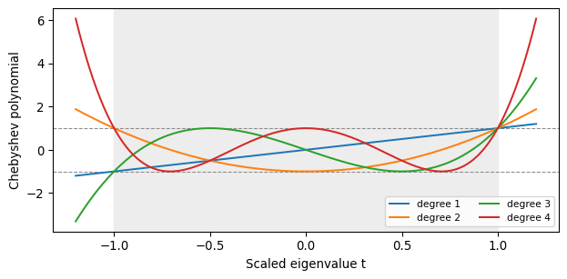
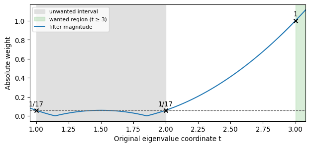
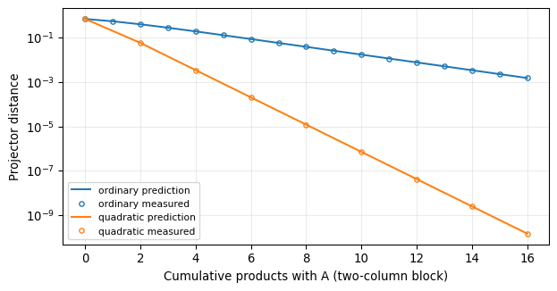

11 Session 10 — Matrix Polynomials and Chebyshev Filtering
Session 9 gave us a way to compute a dominant invariant subspace using only products with \(A\) and QR factorizations. Suppose the wanted eigenvalues of a Hermitian matrix lie above an unwanted cluster. Can we use the same operations, but make a single sweep distinguish the two groups more sharply? The answer starts with a scalar problem on the real line. Once we prescribe how much weight each eigenvalue should receive, a polynomial recurrence transfers that design to the matrix.
Study route (90 minutes). Spend 10 minutes on spectral mapping and selection, 15 on Chebyshev polynomials and minimax, 10 on interval design, 10 on implementation, and 15 on the block estimate, experiment and synthesis. Reserve 30 minutes for practice and checking. By the end, you should be able to design a filter from interval bounds, predict its effect on a trial space, and apply it using only a block-product routine.
11.1 From powers to designed spectral weights
Write \(A=Q\Lambda Q^*\), where \(A=A^*\), \(Q=[q_1,\ldots,q_n]\) is unitary, and \(\Lambda=\operatorname{diag}(\lambda_1,\ldots,\lambda_n)\) is real. For \(v=\sum_i c_iq_i\), orthogonality gives \(c_i=q_i^*v\). Session 9 used \[ A^kv=\sum_i c_i\lambda_i^kq_i. \] Relative to a nonzero component at \(\lambda_1\ne0\), the magnitude of component \(i\) changes by \(|\lambda_i/\lambda_1|^k\). Thus power iteration favors the largest magnitude present initially. Normalizing the vector leaves these ratios unchanged. Even a large negative eigenvalue competes on equal terms with a positive one of the same magnitude.
For a scalar polynomial \(p_m(t)=\sum_{j=0}^m a_jt^j\), define \[ p_m(A)=a_0I+a_1A+\cdots+a_m A^m. \] This is defined for every square \(A\) because \(A^0=I\) and every power has the same dimensions. Since \(AA^j=A^jA\), the sum commutes with \(A\). The choice \(p_m(t)=t^m\) recovers \(m\) successive products. Other choices combine the images \(v,Av,\ldots,A^mv\) with coefficients that can produce cancellation in selected directions.
Spectral mapping. If \(Aq=\lambda q\), induction gives \(A^jq=\lambda^j q\) for all \(j\ge0\). Linearity then gives \(p_m(A)q=p_m(\lambda)q\). In the Hermitian case, collecting these identities columnwise and multiplying by \(Q^*\) yields \[ p_m(A)=Qp_m(\Lambda)Q^*,\qquad p_m(A)v=\sum_i c_i p_m(\lambda_i)q_i. \] Here \(p_m(\Lambda)\) has diagonal entries \(p_m(\lambda_i)\). This is the simplest example of applying a scalar function to an operator. Every original eigenvector remains an eigenvector, including when its mapped eigenvalue is zero. Distinct eigenvalues can map to the same value, so the transformed operator can have larger eigenspaces.
More generally, for any finite square matrix, with spectrum taken over \(\mathbb C\), \[ \sigma(p_m(A))=p_m(\sigma(A)). \] Indeed, a complex Schur form is upper triangular in unitary coordinates. Its polynomial is triangular with diagonal entries \(p_m(\lambda_i)\), which are exactly its eigenvalues. This argument includes defective matrices. The orthogonal component estimates below use an orthonormal eigenbasis, available for normal matrices. The real interval design also uses the reality of the Hermitian spectrum.
11.2 What makes a filter effective?
Partition the eigenvalues into nonempty wanted and unwanted sets \(\sigma_{\mathrm w}\) and \(\sigma_{\mathrm u}\), taking whole eigenspaces. For a polynomial \(p=p_m\) define \[ \alpha=\min_{\lambda\in\sigma_{\mathrm w}}|p(\lambda)|>0,\qquad \beta=\max_{\lambda\in\sigma_{\mathrm u}}|p(\lambda)|,\qquad \eta_m=\frac{\beta}{\alpha}. \] Decompose \(v=v_{\mathrm w}+v_{\mathrm u}\) orthogonally. Squaring the coefficients in the spectral expansion and summing shows that \(\|p(A)v_{\mathrm u}\|_2\le\beta\|v_{\mathrm u}\|_2\) and \(\|p(A)v_{\mathrm w}\|_2\ge\alpha\|v_{\mathrm w}\|_2\). For \(v_{\mathrm w}\ne0\), \[ \frac{\|p(A)v_{\mathrm u}\|_2}{\|p(A)v_{\mathrm w}\|_2} \le \eta_m\frac{\|v_{\mathrm u}\|_2}{\|v_{\mathrm w}\|_2}. \] A value \(\eta_m<1\) guarantees relative suppression, and smaller is better per sweep. Both bounds scale by \(|c|\) when \(p\) is replaced by \(cp\) for \(c\ne0\). Consequently we can choose a convenient normalization. A filter cannot create a wanted component absent from the start.
Exact selection at known points. Take \(A=\operatorname{diag}(1,2,3)\) and \(p(t)=(t-1)(t-3)\). Evaluating at the diagonal entries gives \(p(A)=\operatorname{diag}(0,-1,0)\), so \((x,y,z)^T\) maps to \((0,-y,0)^T\). One application selects the middle eigenvalue whenever \(y\ne0\), although ordinary power iteration would favor \(3\) if \(z\ne0\). The minus sign preserves the selected line. This realizes the selection principle in §1.3.3 with \(\eta=0\). For a large unwanted cluster its individual eigenvalues are usually unknown. What can we guarantee if we only know an interval containing them?
11.3 A polynomial bounded on an entire interval
Define the Chebyshev polynomial of the first kind by \(T_m(\cos\theta)=\cos(m\theta)\). As \(\theta\) runs from \(0\) to \(\pi\), \(t=\cos\theta\) runs through \([-1,1]\). The cosine addition identity \[ \cos((m+1)\theta)+\cos((m-1)\theta)=2\cos\theta\cos(m\theta) \] gives \(T_0(t)=1\), \(T_1(t)=t\), and \[ \boxed{T_{m+1}(t)=2tT_m(t)-T_{m-1}(t).} \] This constructs a degree-\(m\) polynomial for each \(m\) and extends its definition to all real arguments. Substitution gives \(T_2=2t^2-1\) and \(T_3=2t(2t^2-1)-t=4t^3-3t\). Only the two preceding values are needed to advance one degree.
Inside the interval. The cosine definition yields \(|T_m(t)|\le1\). For \(m\ge1\), at \(t_j=\cos(j\pi/m)\), \(j=0,\ldots,m\), one has \(T_m(t_j)=(-1)^j\). These \(m+1\) successive peaks attain the same absolute height with alternating signs. This equioscillation certifies optimality below. Increasing the degree adds oscillations while preserving the height bound.
Outside the interval. For \(t>1\), set \(u=\operatorname{arcosh}t\). The hyperbolic cosine addition identity shows that \(\cosh(mu)\) satisfies the same recurrence and initial values, giving \[ T_m(t)=\cosh(mu)=\tfrac12(e^{mu}+e^{-mu}). \] The recurrence also gives \(T_m(-t)=(-1)^mT_m(t)\). Thus the magnitude grows exponentially in degree at either fixed exterior point, although growth is slow near an endpoint where \(u\) is small. Both exterior tails matter when deciding which eigenvalues the filter might admit.
Why this polynomial? A normalized minimax problem
Fix a real \(t_*>1\) and an integer \(m\ge1\). Among real polynomials \(r\) of degree at most \(m\) satisfying \(r(t_*)=1\), the polynomial \[ h(t)=\frac{T_m(t)}{T_m(t_*)} \] minimizes \(\max_{-1\le t\le1}|r(t)|\). Its maximum there is \(M=1/T_m(t_*)\). The normalization expresses a design requirement: retain unit weight at one specified wanted point. Without it, the zero polynomial would trivially minimize the maximum.
Proof sketch. Suppose some admissible \(r\) had maximum strictly below \(M\). At each alternating extremum \(t_j\), \(h(t_j)-r(t_j)\) has the sign of \(h(t_j)=(-1)^j M\). The difference therefore has at least one zero in each of the \(m\) disjoint open gaps between adjacent extrema. It also vanishes at \(t_*\), giving at least \(m+1\) distinct zeros. A nonzero polynomial of degree at most \(m\) cannot have this many, and \(h-r\) is nonzero at the extrema. Hence no smaller maximum is possible.
The objective is a uniform bound on one interval with one exterior value fixed. It does not assert optimality for a known discrete spectrum, two disjoint unwanted intervals, or a prescribed passband shape. The exact three-point example illustrates how additional information can change the design.
11.4 From spectral bounds to a filter
Let \([a,b]\), \(a<b\), enclose the unwanted spectrum. Subtract its midpoint \(c=(a+b)/2\) and divide by its half-width \(d=(b-a)/2\). Then \[ s(t)=\frac{t-c}{d}=\frac{2t-(a+b)}{b-a},\qquad \widetilde A=\frac{A-cI}{d}. \] Since \(s(a)=-1\) and \(s(b)=1\), \(s\) maps the whole interval onto \([-1,1]\). The scaled matrix has the same eigenvectors with eigenvalues \(s(\lambda_i)\). Choose \(p_m=T_m\circ s\), optionally dividing by \(T_m(s(t_*))\) to give unit response at a wanted point \(t_*\). For a wanted region \([t_*,\infty)\) with \(t_*>b\), the weakest guaranteed wanted magnitude occurs at its near edge. Normalizing there gives a wanted magnitude of at least one throughout the region. The same magnitude argument works on the left by parity.
Bounds alone do not make an interior target exterior. If a wanted point lies inside the interval on which the filter has uniform bound \(M\), its magnitude there is at most \(M\) too. Individual unwanted points could happen to be near roots, but the interval-wide design gives no such guarantee. Selecting an interior band with unwanted spectrum on both sides requires additional structure, such as approximating a passband on separated sets.
Worked design. Return to \(A=\operatorname{diag}(1,2,3)\), now wanting \(3\) and enclosing the other two eigenvalues in \([1,2]\). Here \(s(t)=2t-3\), \(s(3)=3\) and \(T_2(3)=17\). Thus \[ p_2(t)=\frac{T_2(2t-3)}{17}=\frac{8t^2-24t+17}{17}. \]
| Eigenvalue | Scaled argument | \(T_2(s(\lambda))\) | Normalized weight |
|---|---|---|---|
| 1 | \(-1\) | 1 | \(1/17\) |
| 2 | 1 | 1 | \(1/17\) |
| 3 | 3 | 17 | \(1\) |
For \(v=(1,2,1)^T\), the result is \((1/17,2/17,1)^T\). The unwanted-to-wanted norm ratio falls from \(\sqrt5\) to \(\sqrt5/17\), exactly attaining the bound. Two ordinary products give \((1,8,9)^T\) with ratio \(\sqrt{65}/9\). Both procedures use two products when evaluated on vectors. Their different polynomials explain the different outcomes.

Choosing the degree. If \(s(t_*)=\gamma>1\) is a lower bound for all wanted scaled eigenvalues, then \(\eta_m\le1/\cosh(m\operatorname{arcosh}\gamma)\). A sufficient degree for \(\eta_m\le\varepsilon\), \(0<\varepsilon<1\), is \[ m=\left\lceil\frac{\operatorname{arcosh}(1/\varepsilon)} {\operatorname{arcosh}\gamma}\right\rceil . \] With \(\gamma=3\), degree two gives \(1/17\) and degree three gives \(1/99\). For a factor at most \(0.01\), three falls just short and four suffices (\(T_4(3)=577\)). A narrower separation from the unwanted interval requires more work for the same guarantee.
11.5 Applying the filter with matrix products
Even for sparse \(A\), its powers may fill in as longer paths connect more indices. Forming and storing them can cost far more than a sparse product. Expanding a high-degree filter in monomials can also introduce large coefficients and severe cancellation. Instead, implement \(\widetilde A X=(AX-cX)/d\) for a vector or a thin block \(X\). Set \[ W_0=X,\qquad W_1=\widetilde A X,\qquad W_{j+1}=2\widetilde A W_j-W_{j-1}. \] Induction. The initial blocks are \(T_0(\widetilde A)X\) and \(T_1(\widetilde A)X\). Substituting the corresponding formulas for \(W_j,W_{j-1}\) into the update yields \((2\widetilde A T_j(\widetilde A)-T_{j-1}(\widetilde A))X=T_{j+1}(\widetilde A)X\). This works for every column simultaneously. Divide the final block by \(T_m(s(t_*))\) for the normalized result.
In the worked example, \(W_0=(1,2,1)^T\), \(W_1=(-1,2,3)^T\) and \(W_2=2\widetilde A W_1-W_0=(1,2,17)^T\). Dividing by \(17\) recovers the spectral calculation. Degree \(m\) requires \(m\) applications of \(A\) and a constant number of working blocks. For \(r\) columns and a sparse matrix the filtering work is \(O(mr(\operatorname{nnz}(A)+n))\), with \(O(nr)\) additional storage. Thin QR afterward costs \(O(nr^2)\) for \(n\ge r\).
What changes in floating point?
The identity \(W_j=T_j(\widetilde A)X\) is exact arithmetic. In computation each product and block update injects a perturbation that subsequent recurrence steps propagate. Exterior modes can grow until a raw block overflows, even if its final normalized value is near one. Very weak components can underflow or fall below roundoff relative to stronger wanted components. Dividing at the end cannot recover lost directions. Also, an unwanted eigenvalue just beyond an underestimated endpoint is in a growth region. An excessively wide interval can instead bring the nearest wanted point too close to the scaled endpoint.
One remedy for raw growth is to normalize at each degree. For \(\gamma=s(t_*)>1\), write \(d_j=T_j(\gamma)\), \(Z_j=W_j/d_j\), and \(r_j=d_{j-1}/d_j\). The scalar recurrence gives \[ r_1=1/\gamma,\qquad r_{j+1}=1/(2\gamma-r_j). \] Dividing the block recurrence by \(d_{j+1}\) gives \(Z_0=X\), \(Z_1=\widetilde A X/\gamma\), and \[ Z_{j+1}=r_{j+1}(2\widetilde A Z_j-r_j Z_{j-1}). \] The reference component keeps unit weight at every degree. Components farther outside can still grow. Check interval estimates, the numerical rank of the block before QR, and the precision of the product and recurrence if observed convergence departs from prediction. A different normalization or higher precision may be appropriate. No uniform floating-point stability guarantee follows from the scalar minimax result.
11.6 How much does a filtered sweep improve a subspace?
Let \(U=[U_{\mathrm w},U_{\mathrm u}]\) be a unitary eigenbasis of \(A\) and let \(Q_k\) be an orthonormal trial block with exactly as many columns \(r\) as the wanted dimension. Session 9 used \(Y=AQ_k\). Replace this with \(Y=p_m(A)Q_k\) and compute the thin QR factorization \(Y=Q_{k+1}R_{k+1}\). Filtering changes the space. QR gives the same full-rank image an orthonormal basis, so weaker independent directions remain usable on the next sweep. QR cannot repair an already lost direction.
One-sweep angle bound. Assume \(C=U_{\mathrm w}^*Q_k\) is invertible and the filter is nonzero on every wanted eigenvalue. Put \(S=U_{\mathrm u}^*Q_k\). In eigenbasis coordinates the trial block has rows grouped as \([C^T,S^T]^T\). Right multiplication by \(C^{-1}\) gives the graph basis \(\binom{I}{G}\), \(G=SC^{-1}\). For a vector in that graph with coordinates \((x,Gx)\), the tangent of its angle to the wanted space is \(\|Gx\|_2/\|x\|_2\). Maximizing over \(x\ne0\) yields \(\tan\theta_k=\|G\|_2\), where \(\theta_k\) is the largest principal angle.
Write \(D_{\mathrm w}\) and \(D_{\mathrm u}\) for the diagonal filter weights in the two groups. After filtering, the coordinate blocks are \(D_{\mathrm w}C\) and \(D_{\mathrm u}S\). The upper block is still invertible. The new graph therefore satisfies \[ G_{\mathrm{new}}=D_{\mathrm u}G D_{\mathrm w}^{-1},\qquad \boxed{\tan\theta_{k+1}\le \|D_{\mathrm u}\|_2\,\|D_{\mathrm w}^{-1}\|_2\tan\theta_k =\eta_m\tan\theta_k.} \] QR changes only the coordinates within this graph. For a fixed filter with \(\eta_m<1\), the tangent decreases at least geometrically in exact arithmetic. Taking \(p(t)=t\) and ordering by decreasing magnitude recovers \(|\lambda_{r+1}|/|\lambda_r|\). With a designed filter the boundary ratio is measured in the transformed spectrum. A cluster inside the wanted space need not be resolved to approximate its span.
Experiment: a prediction at equal work
Use four eigenvalues \((4,3,2,1)\) in a rotated orthonormal basis \(u_i\). Target the first two. Start with the plane spanned by \(u_1+u_4\) and \(u_2+u_3\). Its wanted overlap is invertible and its largest initial tangent is one. Under ordinary iteration the two graph entries have magnitudes \((1/4)^k\) and \((2/3)^k\). Under the quadratic above they have magnitudes \((1/49)^k\) and \((1/17)^k\), since \(T_2(s(4))=T_2(5)=49\). Thus the worse pair attains the bound for both methods.
For equal-dimensional spaces the projector distance is \(\|Q_kQ_k^*-U_{\mathrm w}U_{\mathrm w}^*\|_2=\sin\theta_k\). Convert the predicted tangent \(z\) to \(z/\sqrt{1+z^2}\) before comparing with that distance. Explicit projectors are inexpensive in this small diagnostic.
def filtered_block(apply, X, a, b, target, degree):
"""Normalized Chebyshev action for a right exterior reference point."""
center, halfwidth = (a + b) / 2, (b - a) / 2
gamma = (target - center) / halfwidth
def scaled(Y):
return (apply(Y) - center * Y) / halfwidth
if degree == 0:
return X.copy()
ratio = 1 / gamma
previous, current = X, ratio * scaled(X)
for j in range(1, degree):
next_ratio = 1 / (2 * gamma - ratio)
following = next_ratio * (2 * scaled(current) - ratio * previous)
previous, current, ratio = current, following, next_ratio
return current
def orth(X):
return np.linalg.qr(X, mode="reduced")[0]
rng = np.random.default_rng(26)
U = orth(rng.normal(size=(4, 4)))
A = (U * np.array([4., 3., 2., 1.])) @ U.T
apply = lambda X: A @ X
Q0 = orth(U[:, :2] + U[:, [3, 2]])
Pstar = U[:, :2] @ U[:, :2].T
fig, ax = plt.subplots(figsize=(6.6, 3.5))
for name, cost, factor, step, color in [
("ordinary", 1, 2/3, apply, "tab:blue"),
("quadratic", 2, 1/17,
lambda X: filtered_block(apply, X, 1, 2, 3, 2), "tab:orange"),
]:
Q = Q0.copy()
sweeps = np.arange(16 // cost + 1)
errors = []
for k in sweeps:
if k:
Q = orth(step(Q))
errors.append(np.linalg.norm(Q @ Q.T - Pstar, ord=2))
z = factor ** sweeps
ax.semilogy(cost * sweeps, z / np.hypot(1, z), color=color,
label=f"{name} prediction")
ax.semilogy(cost * sweeps, errors, "o", ms=4, mfc="none",
color=color, label=f"{name} measured")
print(f"{name}, 4 block products: {errors[4 // cost]:.6g}")
ax.set(xlabel="Cumulative products with A (two-column block)",
ylabel="Projector distance")
ax.grid(alpha=.25)
ax.legend(fontsize=8)
fig.tight_layout()
plt.show()ordinary, 4 block products: 0.193786
quadratic, 4 block products: 0.00346019
At four products, ordinary iteration has completed four sweeps and has tangent \((2/3)^4=16/81\). The filter has completed two sweeps and has tangent \((1/17)^2=1/289\). The corresponding measured distances are about \(0.194\) and \(0.00346\). Per sweep, compare \(1/17\) with \(2/3\). Per two products, compare \(1/17\) with \((2/3)^2\). Both comparisons favor the quadratic for this spectrum and start. Equal product counts still omit QR costs, block updates and memory traffic. With a different start the bound can be strict, and at rounding scale the computed projector distance need no longer track the predicted curve.
11.7 How the seminar algorithm fits together
| Stage | Mathematical decision | Computational consequence |
|---|---|---|
| 1. Spectral information | Enclose the unwanted eigenvalues and identify an exterior wanted edge. | A missed unwanted outlier may receive a large weight. A conservative bound can require a higher degree. |
| 2. Polynomial design | Scale the unwanted interval, fix a reference weight, and choose a degree from the required separation. | The minimax bound converts interval information into a worst-case factor per sweep. |
| 3. Numerical application | Evaluate the scalar design on a block through the matrix recurrence. | Each degree adds one block product. Scaling and precision determine the range of intermediate values that can be represented reliably. |
| 4. Subspace update | Compute a thin QR of the filtered block. | The orthonormal basis can be filtered again or used to extract approximate eigenpairs of the original matrix. |
Session 11 develops Rayleigh–Ritz extraction using \(Q^*AQ\). Keeping \(A\) here matters: the wanted eigenvalues are those of the original operator, and the polynomial may map distinct eigenvalues to the same value.
11.8 Central Synthesis — From Polynomial Approximation to Spectral Subspace Selection
The identity \(p(A)q_i=p(\lambda_i)q_i\) turns a question about an \(n\)-dimensional operator into a scalar design decision. To keep a trial space close to the wanted eigenspace, control the weakest wanted weight as well as the strongest unwanted weight. Their ratio bounds precisely the part of the trial space that tilts away from the target.
Interval information turns the design decision into an approximation problem. After an affine change of variable, equioscillation certifies the smallest possible worst-case weight on the unwanted interval for a fixed exterior response. The same Chebyshev polynomial has a three-term recurrence, so a matrix-product routine can realize this design one degree at a time. Finally, QR preserves the image for the next sweep. On the worked interval \([1,2]\), these steps turn the scalar number \(T_2(3)=17\) into a factor \(1/17\) in a subspace-angle estimate, at the price of two block products.
11.9 Independent practice (30 minutes, including checks)
- Redirect dominance (4 minutes). For \(A=\operatorname{diag}(-5,1,2)\), design a degree-two filter with unit weight at \(1\) and zero weights at the other two eigenvalues. Apply it to \((1,2,3)^T\). Which line would ordinary power iteration select?
- Design from bounds (6 minutes). The unwanted spectrum lies in \([2,6]\) and every wanted eigenvalue is at least \(8\). Derive the normalized quadratic, its guaranteed ratio, and the smallest degree certifying a factor at most \(0.02\).
- Run the recurrence by hand (5 minutes). With the bounds in exercise 2, use \(A=\operatorname{diag}(2,4,8)\) and \(v=(1,1,1)^T\). Compute the first two raw recurrence steps and normalize. Why does one coefficient change sign?
- Diagnose a failed design (4 minutes). Use the chapter’s \([1,2]\) filter with wanted point \(3\). An unwanted eigenvalue at \(0\) was missed. Predict its degree-two weight. Would increasing the degree restore separation?
- Predict a block sweep (6 minutes). In the experiment replace the second starting vector by \(u_2+2u_3\). Predict the filtered projector distance after two block products. Then replace that vector by \(u_3\) alone. Which hypothesis fails? Can QR fix it?
- Mastery check (5 minutes). Without formulas in front of you, explain how to turn an interval and a wanted edge into a factor, a block recurrence and a reliable trial basis. Identify one limitation of each of the spectral design and its numerical evaluation.
Solution checks
- \(p(t)=-(t+5)(t-2)/6\) has the prescribed values. The image is \((0,2,0)^T\). Ordinary iteration selects the line of the first coordinate since \(|-5|\) is largest and its initial coefficient is nonzero.
- \(s(t)=(t-4)/2\), \(s(8)=2\) and \(p_2(t)=(2s(t)^2-1)/7\). The ratio is at most \(1/7\). The threshold requires \(T_m(2)\ge50\). Successive values at degrees \(2,3,4\) are \(7,26,97\), so degree four suffices and degree three falls short of the interval guarantee.
- The scaled eigenvalues are \(-1,0,2\). Thus \(W_1=(-1,0,2)^T\), \(W_2=(1,-1,7)^T\) and the answer is \((1/7,-1/7,1)^T\). At the midpoint the response is \(T_2(0)=-1\) before normalization. A negative weight reverses the coefficient’s sign while its magnitude still obeys the interval bound.
- \(s(0)=-3\) and \(s(3)=3\). By parity their magnitudes agree at every degree. The normalized quadratic gives unit weight to both. Redesign the unwanted set description before choosing a degree.
- After one quadratic sweep the two graph entries have magnitudes \(1/49\) and \(2/17\). Thus \(\tan\theta=2/17\) and the distance is \(2/\sqrt{293}\). With \(u_3\) alone, the wanted overlap has rank one. Neither polynomial weighting nor a change of basis by QR introduces the missing \(u_2\) component.
- Map the unwanted interval onto \([-1,1]\) and normalize \(T_m\) at the scaled wanted edge. Bound the unwanted-to-wanted ratio and choose \(m\) to meet the tolerance. Apply the scaled operator to successive blocks using the recurrence and take thin QR of the result. A missed exterior outlier can defeat an exact filter, and lost numerical rank can defeat an accurately chosen interval. These require different remedies.